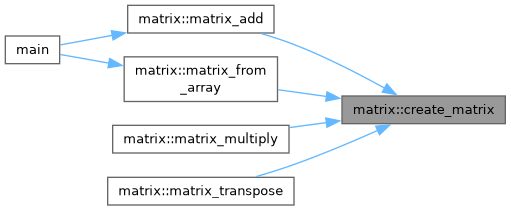
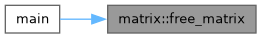
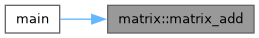
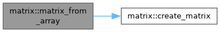
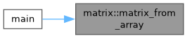
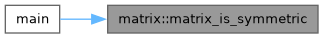
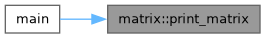

- Generated by
 1.15.0
1.15.0
|
Matrix Calculator
Библиотека для работы с матрицами
|
Classes | |
| struct | Matrix |
| Структура матрицы. Хранит двумерный динамический массив и его размеры. More... | |
Functions | |
| Matrix | create_matrix (int rows, int cols) |
| Создание матрицы заданного размера. | |
| void | free_matrix (Matrix m) |
| Освобождение памяти. | |
| Matrix | matrix_add (Matrix a, Matrix b) |
| Сложение двух матриц. | |
| Matrix | matrix_multiply (Matrix a, Matrix b) |
| Умножение двух матриц. | |
| void | print_matrix (Matrix m) |
| Вывод матрицы в консоль. | |
| Matrix | matrix_from_array (double *data, int rows, int cols) |
| Создание матрицы из массива. | |
| bool | matrix_is_symmetric (Matrix m, double tolerance) |
| Проверка на симметричность (Вариант 18). | |
| Matrix | matrix_transpose (Matrix m) |
| Транспонирование матрицы. | |
| Matrix matrix::create_matrix | ( | int | rows, |
| int | cols ) |
Создание матрицы заданного размера.
| rows | Количество строк (> 0). |
| cols | Количество столбцов (> 0). |
| std::invalid_argument | Если rows <= 0 или cols <= 0. |

| void matrix::free_matrix | ( | Matrix | m | ) |
Освобождение памяти.
| m | Матрица для освобождения. |

Сложение двух матриц.
| a | Первая матрица. |
| b | Вторая матрица. |
| std::invalid_argument | Если размеры не совпадают. |

| Matrix matrix::matrix_from_array | ( | double * | data, |
| int | rows, | ||
| int | cols ) |
Создание матрицы из массива.
| data | Указатель на массив. |
| rows | Количество строк. |
| cols | Количество столбцов. |


| bool matrix::matrix_is_symmetric | ( | Matrix | m, |
| double | tolerance ) |
Проверка на симметричность (Вариант 18).
| m | Матрица. |
| tolerance | Погрешность. |

Умножение двух матриц.
| a | Матрица MxN. |
| b | Матрица NxK. |
| std::invalid_argument | Если cols(a) != rows(b). |
Транспонирование матрицы.
| m | Исходная матрица. |
| void matrix::print_matrix | ( | Matrix | m | ) |
Вывод матрицы в консоль.
| m | Матрица для вывода. |
